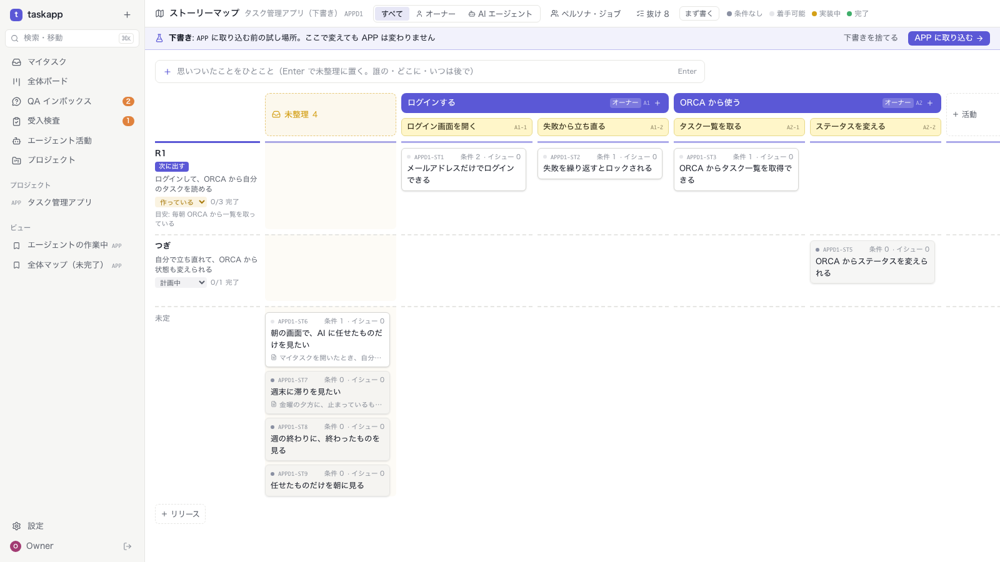
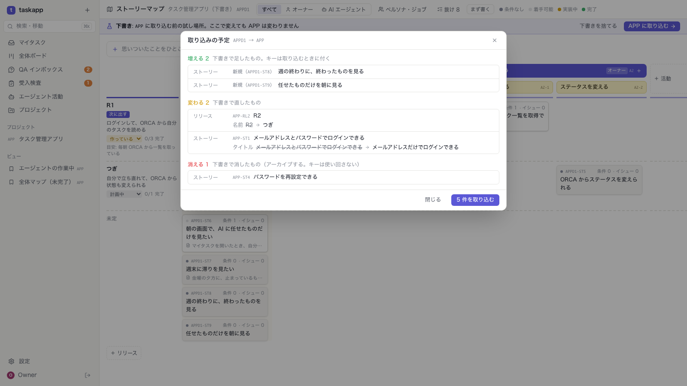
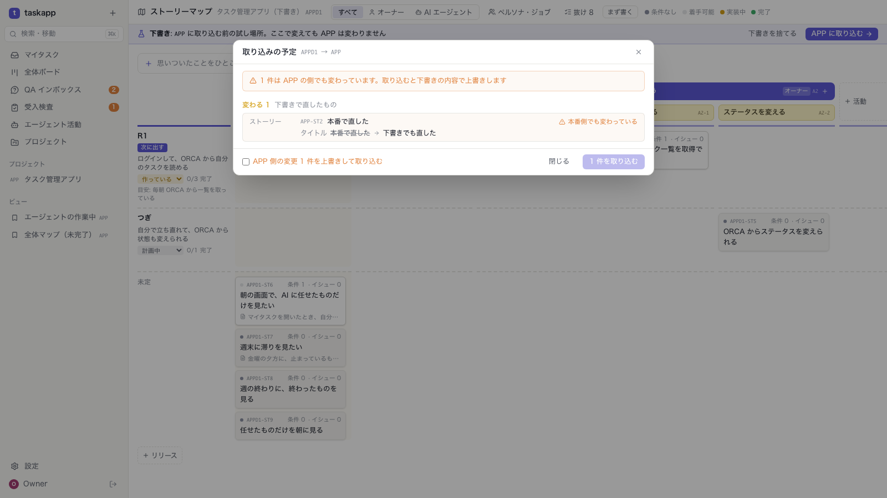
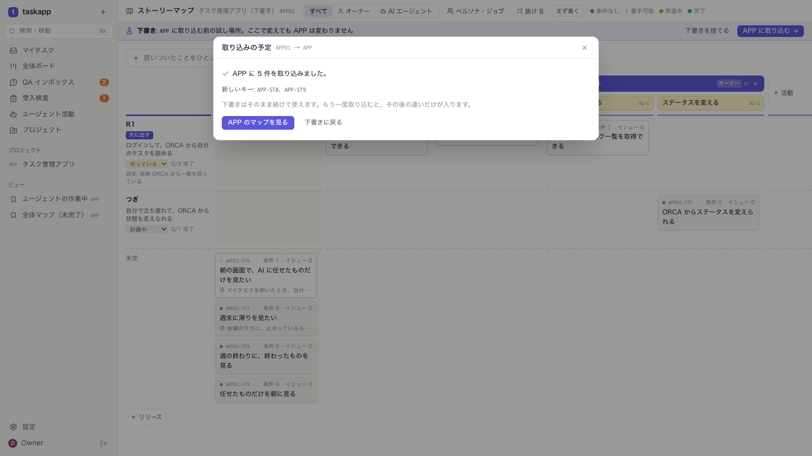

REQUIREMENTS · STORY MAP DRAFTS
ストーリーマップは、試行錯誤してから決まる。
下書きのプロジェクトで自由に組み替え、予定を見てから一度に入れる
ブランチ feat/req-drafts · 本体 task-app
2026-11-03 · 確認待ち
01 · なぜ
| 案 | よい点 | 選ばなかった理由 |
|---|---|---|
| 1 下書きのプロジェクト ✓ | 新しいのは取り込みだけ。何度でも壊して作り直せる | — |
| 2 マップの中の下書き | いちばん自然（本番と並べて見られる） | すべての表に下書きの状態が要り、重い |
| 3 テキストで読み込む | AI との会話・git に向く | カードを動かしながら考えられない |
| 4 「仮」の印 | いちばん小さい | 本番と混ざる。消し忘れる |
2 / 11
02 · 流れ
3 / 11
04 · 下書きで試す

5 / 11
05 · 取り込みの予定

6 / 11
06 · 衝突

7 / 11
07 · 取り込んだあと

8 / 11
08 · データと API
| どこ | 変更 |
|---|---|
| projects.draft_of | 取り込み先のプロジェクト（マイグレーション 013）。GET /projects には下書きを出さない |
| req_draft_links | 下書きの要素 ↔ 取り込み先の要素。最後にそろったときの中身のハッシュを両側に持つ |
| GET/POST /projects/{key}/drafts | 下書きの一覧と作成（from: copy | empty、key、name） |
| GET /projects/{draft}/import-plan | items（create / update / archive / restore、changes、conflict）・target_only・counts・warnings |
| POST /projects/{draft}/import | 人だけ（エージェントは 403）。衝突があれば 409、force: true で上書き |
| MCP | create_draft・get_import_plan。説明に「大きく考え直すときは下書きで」 |
| テスト | API 229 件（+13 drafts.test.ts）、画面 48 件（+2 storymap-drafts.spec.ts）すべて成功 |
9 / 11
09 · MCP でマップを作る
| 道具 | すること |
|---|---|
| create_persona / update_persona | ペルソナを足す・直す（名前・human / agent・説明・並び） |
| create_activity | 活動を足す。手順をまとめて渡せる（steps: [{name}, …]）。persona_key で誰の活動か |
| update_activity | 名前・説明・並び。persona_key: "" でペルソナを外す |
| create_step / update_step | 手順を活動の最後に足す・名前と並びを直す |
| create_story | persona_key・i_want・so_that を足した（手順の下に、誰の何のための話かまで一度に） |
| 消す道具は足さない | 消すのは画面か、下書きで消してから取り込む（元ではアーカイブ） |
| テスト | API 232 件（+3 mcp-storymap.test.ts）すべて成功 |
10 / 11
10 · 制限と確認したいこと
11 / 11